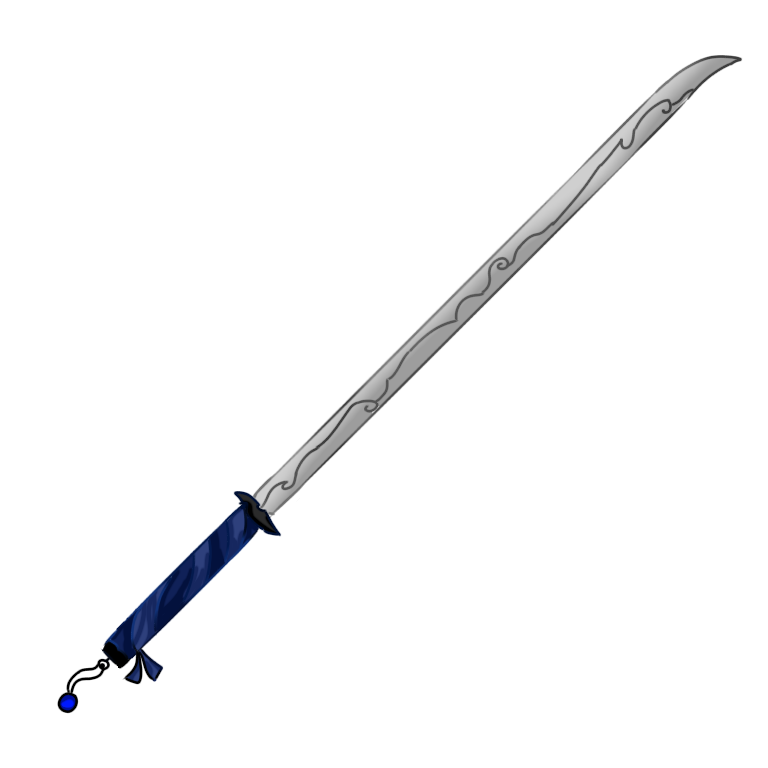
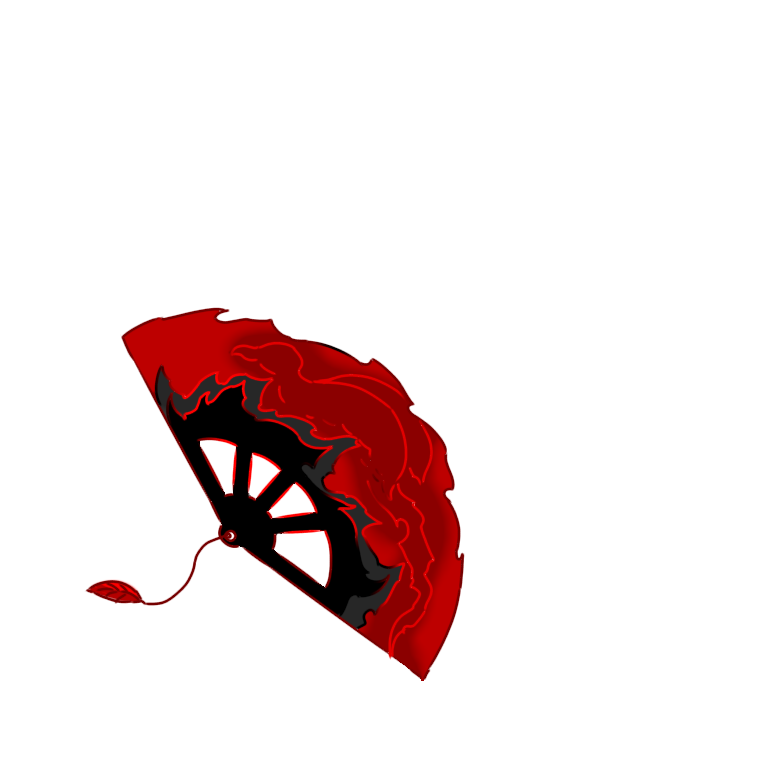

Cry2 정보
정보
1.레벨+스텟+각성
*마크 내 레벨이 오를시 20의 경험치로 대체됩니다.
1렙당 체력 300
스텟 1렙당 3 최대 300스텟
샐리온(힘)
스텟 1당 공격력 4/체력 40
엘라임(방)
스텟 1당 공격력 2/방어력 1/체력 60
실피드(민)
스텟 1당 공격력 2/체력 30/크리티컬 0.3%
-각성
직업 무기 (공통 : 체력 200 증가)
1차 : 중궁극기 생성
2차 : 궁극기 생성
3차 : 직업 기본 스킬 추가 (패시브 적용)
4차 : 스텟 추가권 10
5차 : 패시브 강화
(4차 각성부터 완료후 크로에게 알려야 해당 효과들이 적용됩니다. 적용은 다음회차에)
2.패시브
샐리온(힘)
[ 전염 ]
주변 대상을 불태워, 데미지를 준다.
(몹 : 초당 10 데미지/플레이어 : 초당 5 데미지)
필요 스텟 : 50
[ 의지 ]
체력이 700 이하로 내려갈시 체력을 400 회복한다.
필요 스텟 : 100
쿨타임 : 20초
[ 투지 ]
해당 쿨타임 상태인 스킬의 쿨타임을 1.5배 가속한다.
특수기 : 10초 이상
중궁극기 : 40초 이상
궁극기 : 100초 이상
필요 스텟 : 150
[ 불의 의지 ]
체력이 0이하로 내려갈시 체력을 모두 회복하며, 4초간 재생한다.
필요 스텟 : 200
쿨타임 : 150초
엘라임(방)
[ 수복 ]
3초마다 체력을 30 회복한다.
필요 스텟 : 50
[ 수혈 ]
체력 700 증가
필요 스텟 : 100
[ 보호 ]
체력이 800 이하로 내려갈시 2초간 무적상태가 된다.
필요 스텟 : 150
쿨타임 : 15초
[ 물의 의지 ]
체력이 0이하로 내려갈시 체력을 모두 회복하며, 4초간 무적상태가 된다.
필요 스텟 : 200
쿨타임 : 150초
실피드(민)
[ 가속 ]
신속 1 버프를 부여받는다.
필요 스텟 : 50
[ 약점 ]
크리티컬 확률이 20퍼 증가한다.
필요 스텟 : 100
[ 폭풍 ]
기본기가 쿨타임일시 주변에 고정피해를 준다.
필요 스텟 : 150
쿨타임 : 4초
[ 바람의 의지 ]
체력이 0이하로 내려갈시 체력을 모두 회복하며, 6초간 신속상태가 된다.
필요 스텟 : 200
쿨타임 : 150초
3.직업
크로피셜 직업 티어
0티어£_청룡
1티어£_현무,£_백호
2티어£_혼돈
3티어£_기린
4티어£_주작

£_청룡 - (검)
[기본기] : 데미지 : 220/범위 : 6
쿨타임 : 1.4초
[패시브] (번개 사슬)
스킬 사용시 스택을 얻으며, 3개 이상일시 3개를 소모하여 주변 2 대상을 경직시키며 데미지를 준다.
데미지 : 240/범위 : 7
쿨타임 : 0초
[특수기] (충전)
사용시 패시브 스택을 3만큼 얻으며, 체력을 일부 회복한다.
(사용시 5초간 신속 2)
회복량 : 400
쿨타임 : 10초
[중궁극기] (뇌운)
6초간 지속되는 뇌운을 소환한다. 1초 단위로 주변 4 대상에게 데미지를 주며 경직시킨다.
(사용시 무적 3.5초)
데미지 : 250/범위 : 12
쿨타임 : 45초
[궁극기] (푸른 번개)
바라보는 곳을 5회 가르며, 체력을 회복한다. 이후 주변을 스턴시키며, 2.5초간 침묵을 건다.
(스턴,침묵은 최대 5 대상)
(스텟 비적용)
데미지 : 350/회복량 : 400/범위 : 8
쿨타임 : 120초

£_주작 - (부채)
[기본기] : 데미지 : 220/범위 : 7
쿨타임 : 1.7초
[패시브] (불꽃 깃털)
기본기 사용시 바라보는 곳으로 투사체를 날린다. 대상 타격시 데미지를 주며, 체력을 일부 회복한다.
(공격력 적용)
데미지 : 70/회복량 : 50/전방 사거리 : 18/양옆 사거리 : 4
쿨타임 : 4초
[특수기] (활공)
사용시 체력을 일부 회복하며, 5초간 비행한다. 비행 동안에는 주변에 도트데미지를 준다.
회복량 : 450
쿨타임 : 24초
[중궁극기] (홍염)
바라보는 곳으로 텔레포트 후 주변을 3회 가른다. 타격마다 체력을 회복하며, 데미지를 준다.
(최대 10칸 이동,벽통과 X)
데미지 : 300/회복량 : 400/범위 : 7
쿨타임 : 40초
[궁극기] (붉은 날개)
자신의 공격력,방어력의 2배+2500만큼 체력을 회복하며, 7초간 화염을 두룬다. 지속 시간 동안 주변 대상에게 지속 데미지를 주며, 신속을 받는다.
(침묵 해제), (크리티컬만 적용)
데미지 : 2800/초당 데미지 : 400/범위 : 5
쿨타임 : 150초

£_백호 - (도끼)
[기본기] : 데미지 : 230/범위 : 5
회복량 : 70/출혈 : 5
쿨타임 : 1.2초
[패시브] (피의 발톱)
백호의 모든 공격 스킬에 출혈,흡혈이 적용되며, 기본적으로 20%의 크리티컬 확률을 보유한다.
(출혈 데미지 : 1당 15 데미지)
쿨타임 : 0초
[특수기] (신속)
사용시 6초간 신속 3을 받는다.
쿨타임 : 13초
[중궁극기] (혈도)
하늘로 도약후 지면으로 텔포하며, 주변에 데미지와 구속을 준다. 이후 6초간 신속을 받는다.
(크리티컬 발동시 데미지 추가 적용)
데미지 :1000/회복량 : 2500/출혈 : 20/범위 : 7
쿨타임 : 34초
[궁극기] (하얀 사신)
사용시 주변에 데미지를 주며, 구속시킨다. 이후 8초 동안 체력을 지속적으로 회복하며, 신속을 받는다.
(침묵 무시), (지속동안 기본기 쿨타임을 2배 가속하며, 구속,실명 효과를 제거한다.)
데미지 :2200/회복량 : 3500/지속 회복량 : 3200/출혈 : 40/범위 : 10
쿨타임 : 137초

£_현무 - (단검)
[기본기] : 데미지 : 220/범위 : 5
독 1초
쿨타임 : 1.3초
[패시브] (두개의 가면)
자신의 형상에 따라 아래의 패시브가 적용된다.
뱀
-회피 상태일시 신속,은신 상태가 되며, 특수기 쿨타임을 2배 가속한다.
-현무의 모든 공격스킬에 독 데미지가 추가된다.
독 데미지 : 초당 40
거북
-무적 상태일시 체력을 회복한다.
-현무의 모든 공격스킬에 구속 디버프가 추가된다.
회복량 : 초당 400
[특수기] (듀얼 웨폰)
자신의 형상을 바꾼다.
뱀->거북 : 3초간 무적상태가 된다.
쿨타임 : 14초
거북->뱀 : 3초간 회피상태가 된다.
쿨타임 : 14초
사용시 거북 기본기를 사용하며 타격시 체력을 회복하며 구속을 건다.
데미지 : 100/회복량 : 120/범위 : 6
쿨타임 : 4초
[중궁극기] (흑사)
쿨타임 : 40초
주변을 4회 타격하며, 1번째 타격은 주변에 침묵,실명을, 4번째 타격은 주변 대상을 자신에게로 끌고온다.
(사용시 특수기,특수기 패시브 쿨타임을 초기화하며, 3초간 회피상태가 된다.), (사용시 상대에게 2초간 구속 1)
데미지 : 250/범위 : 8/독 : 타격당 2초
쿨타임 : 40초
[궁극기] (검은 냉기)
쿨타임 : 135초
3.5초동안 주변에 지속데미지를 준다.
-뱀 : 없음
-거북 : 지속동안 주변 구속 255
(사용시 3초간 무적), (크리티컬 적용)
데미지 : 1600/범위 : 7
쿨타임 : 135초

£_기린 - (사복검)
[기본기] : 데미지 : 200/범위 : 6
쿨타임 : 1.2초
[패시브] (천도)
스킬 사용후 기본기 사용시 신속을 받으며, 주변에 데미지를 준다.
(타격시 회복), (기본기 사용시에도 패시브가 발동되지만 기본기의 경우 3초의 쿨타임이 존재한다.)
데미지 : 150/회복량 :190/범위 : 6
쿨타임 : 0초
[특수기] (섬광)
주변 대상을 경직시키며 무적이된다
(사용시 1.5초간 무적)
범위 : 8
쿨타임 : 10초
[중궁극기] (천충)
주변 대상에게 2회 데미지를 주며 침묵,실명,구속을 건다.
(크리티컬 발동시 회피 상태가 된다.), (사용시 3초간 무적), (타격당 : 2초간 구속 2/실명 3초/회피 2초/침묵 : 2초)
데미지 : 350/범위 : 6
쿨타임 : 30초
[궁극기] (천신 강림) 쿨타임 : 130초
주변 대상에게 실명,구속을 부여하며,
3.5초간 회피, 15초 동안 신속 2를 받는다.
(사용시 특수기,중궁극기의 쿨타임을 1초로 설정), (침묵 무시), (실명 8초/7초간 구속 2)
쿨타임 : 130초/범위 : 13

£_혼돈 - (지팡이)
[기본기] : 데미지 : 210/범위 : 6
(1초간 구속 1)
쿨타임 : 1.3초
[패시브] (갈피를 못 잡는.)
혼돈의 모든 공격 스킬은 대상에게 표식을 남긴다.
표식이 생긴 대상은 표식의 수에 따라 지속 데미지를 받는다.
1~2 : 초당 20 데미지
3~4 : 초당 40 데미지
(혼돈에게서 일정 거리만큼 멀어진 대상의 표식은 사라진다.), (대상당 최대 표식 수 4), (표식의 대상이 주변에 있을시 특수기 쿨타임을 1.5배 가속한다.)
{표식 제거 범위 : 14/특수기 가속 범위 : 10}
쿨타임 : 0초
[특수기] (혈후)
모든 표식을 흡수하며, 표식의 수만큼 회복하며 은신을한다.
(7초간 신속 2), (사용시 3초간 은신), (흡수한 표식의 수만큼 중궁극기의 쿨타임을 감소시킨다)
쿨타임 : 17초
회복량 : 표식당 140
[중궁극기] (사도)
주변을 2회 가르며 표식을 4만큼 남긴다.
표식이 4인 대상에게는 침묵,구속을 걸며,
자신의 공격력+방어력+1200 만큼 체력을 회복한다.
(해당 스킬은 확정적으로 크리티컬이 발생하며, 대상의 방어력을 무시한다.), (사용시 무적 3초), (타격당 : 침묵 1.5초/2초간 구속 2)
쿨타임 : 35초
데미지 : 200/범위 : 6
[궁극기] (자색 공포)
5초간 은신,회피 상태가 된다.
이후 기본기 사용시 주변 대상들에게 3회 데미지를 가한다.
맞은 대상은 모두 4의 표식이 남겨지며, 타격당 2초의 침묵을 건다.
(침묵 무시)
쿨타임 : 135초
데미지 : 700/범위 : 5
5.전설/신화무기
£_어둑시니 - (창)
(흑야의 헛것)
주변에 엔티티 존재시 신속을 받으며, 체력을 재생한다.
쿨타임 : 0초
£_구미호 - (낫)
(피로 물든 꼬리)
체력이 0이하로 내려갈시 체력을 모두 회복하며, 2초간 무적 상태가 된다.
쿨타임 : 170초
(예리함)
기본적으로 15%의 크리티컬 확률을 보유한다.
£_장산범 - (검)
(환각)
직업 기본기 사용시에 발동되는 회피 제거 효과를 없앤다.
쿨타임 : 0초
£_제천대성 - (여의봉)
(미후왕)
제천대성의 모든 스킬은 대상을 경직시키며, 체력을 회복한다.
쿨타임 : 0초
£_도깨비 - (방망이)
(도깨비불)
도깨비 스킬 사용시 도깨비불을 10만큼 충전하며,
30이상일시 모든 도깨비불을 소모하여 체력을 회복하며, 주변에 데미지를 준다. (방어력 비례)
쿨타임 : 0초
£_스사노오 - (검)
(폭풍 검격)
스사노오 스킬 사용시 바라보는 곳에 검격을 날리며, 신속을 받는다.
쿨타임 : 10초